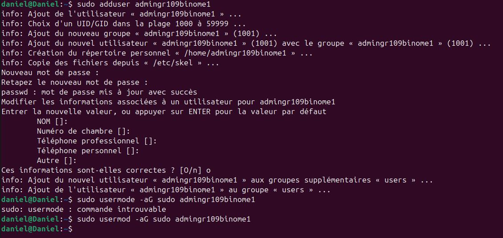
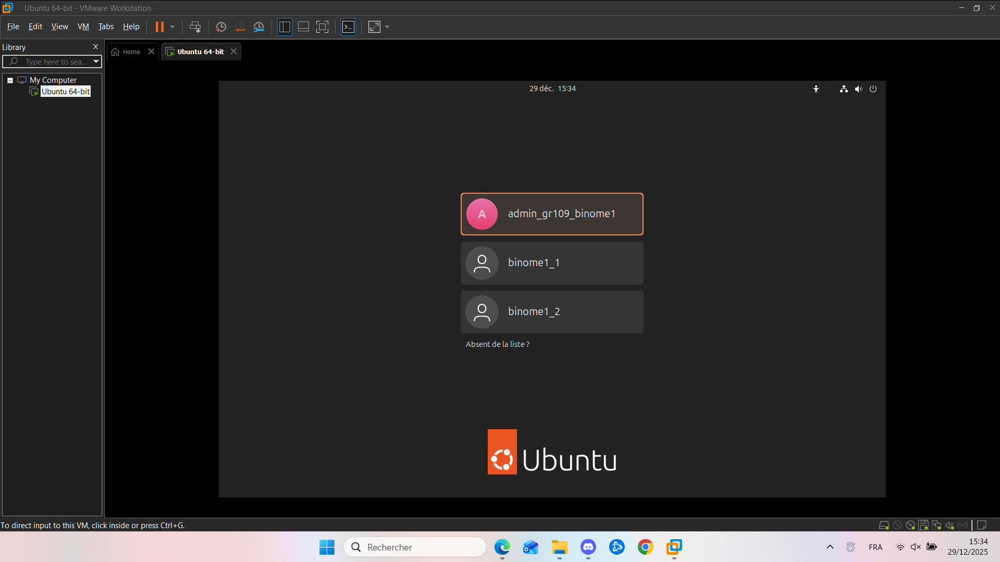
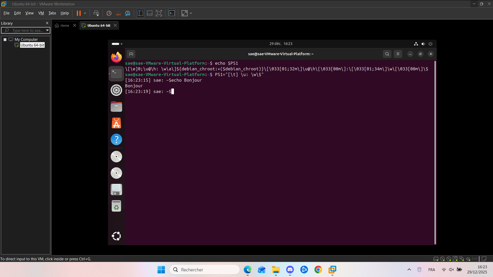

Ouvrez le terminal et effectuez les commandes suivantes :
Cela vous demandera d'entrer votre mot de passe
Cette commande va alors créer un utilisateur qui sera "normal" (sans droit en plus)
Cette commande donnera les droits administrateurs à cet utilisateur

Il suffit de faire la même manip sans donner les droits administrateurs et à la prochaine connexion vous aurez l'affichage suivant

L'invite de commande est contenu dans une variable nommée PS1 (souvent), il suffit simplement de la changer
Si vous voulez que la modification soit permanente, il suffit d'exporter cette commande dans le bashrc
